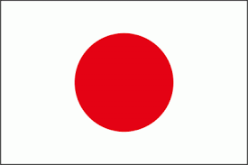

Japon
Japón es una nación insular del océano Pacífico con densas ciudades, palacios imperiales, parques nacionales montañosos y miles de santuarios y templos.
China
China es una nación muy poblada de Asia Oriental cuyos vastos paisajes abarcan praderas, desiertos, montañas, lagos, ríos y más de 14,000 km de costa.

Corea del Norte
La República Popular Democrática de Corea, comúnmente Corea del Norte, es un país soberano de Asia Oriental, situado en la parte norte de la península de Corea.
Corea del Sur
La República de Corea, comúnmente Corea del Sur es un Estado soberano de Asia Oriental, ubicado en la parte sur de la península de Corea.

Tailandia
Tailandia es un país del Sudeste Asiático. Es famoso por sus playas tropicales, los opulentos palacios reales, las ruinas antiguas y los templos adornados con figuras de Buda.
África
- Senegal
- Sudafrica
- Nigeria
- Kenia
- Maarruecos
- Autralia
- Nueva Zelanda
- Fiyi
- Samoa
- Palaos
- México
- Estados Unidos
- Brasil
- Canadá
- Alaska
Senegal
Senegal es un país de la costa oeste de África con un rico legado colonial francés y muchas atracciones naturales.

Sudáfrica
Sudáfrica es un país del extremo más meridional del continente africano que se caracteriza por sus numerosos ecosistemas distintos.

Nigeria
Nigeria, oficialmente República Federal de Nigeria, es un país de África occidental, que limita con Níger al norte, con Chad en el nordeste, con Camerún en el este y con Benín en el oeste.

Kenia
Kenia es un país de África Oriental con una costa en el océano Índico. Su territorio abarca sabana, terrenos en lagos, el espectacular Gran Valle del Rift y zonas montañosas altas.

Marruecos
Marruecos es un país de África del Norte que limita con el océano Atlántico y el mar Mediterráneo, y se distingue por las influencias culturales bereberes, árabes y europeas.

Oceanía
Australia
Australia es un país rodeado por los océanos Índico y Pacífico. Sus ciudades principales (Sídney, Brisbane, Melbourne, Perth y Adelaida) son costeras.

Nueva Zelanda
Nueva Zelanda es un país en el suroeste del océano Pacífico, que comprende dos islas principales, ambas marcadas por los volcanes y la glaciación.

Fiyi
Fiyi, un país del Pacífico Sur, es un archipiélago de más de 300 islas. Es famoso por sus paisajes escabrosos, las playas bordeadas de palmeras y los arrecifes de coral con lagunas de aguas cristalinas.

Samoa
Samoa es un país que abarca el grupo más occidental del archipiélago de Samoa, en la Polinesia. Muchas de sus islas tienen playas bordeadas de arrecifes e interiores escabrosos cubiertos de bosques tropicales con desfiladeros y cascadas.
Palaos
Palaos es un archipiélago de más de 500 islas, forma parte de la región de Micronesia en el océano Pacífico occidental.
America
México
México es un país entre los Estados Unidos y América Central, conocido por las playas en el Pacífico y el golfo de México, y su diverso paisaje de montañas, desiertos y selvas.
 Estados Unidos
Estados Unidos
Estados Unidos es un país de 50 estados que ocupa una extensa franja de América del Norte, con Alaska en el noroeste y Hawái que extiende la presencia del país en el océano Pacífico.
 Brasil
Brasil
Brasil es un vasto país de Sudamérica que se extiende desde la Cuenca del Amazonas en el norte hasta los viñedos y las enormes cataratas del Iguazú en el sur.
 Canadá
Canadá
Canadá es el país norteamericano que se extiende desde los Estados Unidos en el sur hasta el círculo polar ártico en el norte.
 Alaska
Alaska
Alaska es uno de los cincuenta estados que junto con Washington D. C., forman los Estados Unidos. Su capital es Juneau y su ciudad más poblada es Anchorage.
 Alaska
Alaska